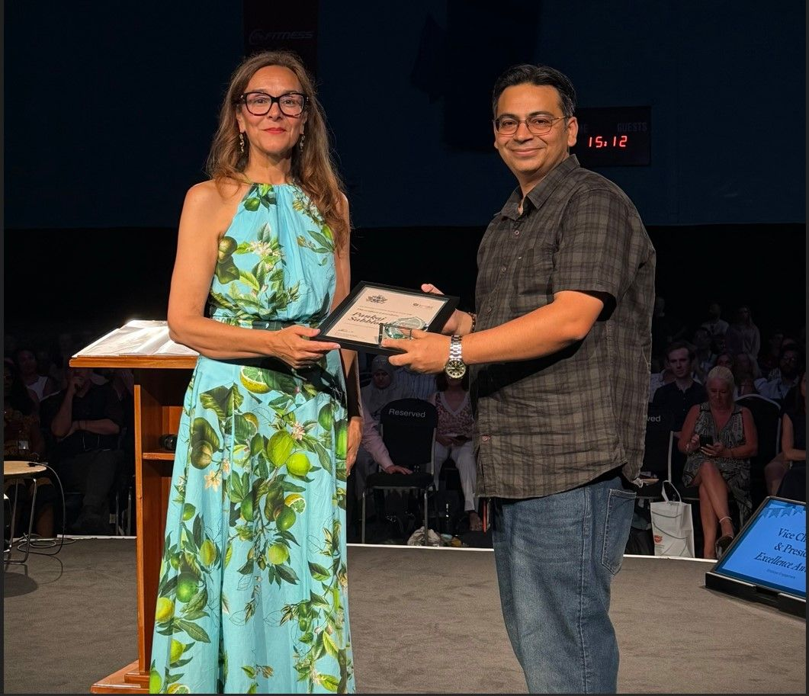

UK HIGHER EDUCATION2024–present
950200
reports → a focused core portfolio
Less noise. More decision value.
Led the rationalisation of UEL’s reporting estate, reducing duplication and focusing effort on information that supports real business needs.
AI & DATA STRATEGY · GOVERNANCE · LEADERSHIP
I connect AI, data and people to help leaders make better decisions and turn ambitious ideas into measurable outcomes.
Experience across
SELECTED IMPACT
From institutional data products to live telecom networks, the work starts with a problem and ends with an outcome.
reports → a focused core portfolio
Led the rationalisation of UEL’s reporting estate, reducing duplication and focusing effort on information that supports real business needs.
reported network KPI improvement
AI-enabled capacity enhancement, forecasting and automation contributed to better network performance and a reported 18% monthly revenue improvement.
approximate sites in the upgrade programme
Co-led performance and capacity outcomes for an Ooredoo upgrade programme delivered in eight months.
virtual-learning modules audited
Reviewed quality, accessibility and alignment with learning objectives, alongside teaching AI, Big Data and Power BI.
approximate traffic improvement
Improvements at capacity-constrained sites contributed to higher traffic and a reported 22% monthly revenue uplift.
offshore resources supported
Coordinated tools for Sprint US Network Vision; received the ACE Award for delivery in half the target timeline.
customer-complaint SLA requirements achieved
Aligned network planning, performance and complaint resolution around dependable service and clear commitments.
reporting service escalations from March 2026
Strengthened service ownership and cross-team coordination, moving from daily escalations in January to none from March 2026.
engineers mentored
Developed engineers through practical analytical work, operational problem-solving and clear recommendations to senior management.
sources in the research corpus
A 40-source thematic synthesis informs doctoral work connecting governance principles with operational evidence in UK higher education.
Selected outcomes from my career record. Figures are approximate where indicated; telecom uplifts are reported programme outcomes to which my work contributed.
AWARDS & RECOGNITION
Service, academic and delivery awards across UK higher education and global telecommunications.
Award winner · 2026
Within two years of becoming Head of Data Products, recognised for strategic Data Leadership, Service Improvement and institution-wide Impact. Turning complex priorities into clearer reporting, stronger services and better decisions with the trust and collaboration of colleagues across UEL.

93% overall · Highest score in the programme
Master’s completed · 2024
Academic excellence that strengthens rigorous, practical AI decision-making.
OML SMART MS project
Recognition for management and team contribution.
Developing people while delivering better service outcomes.
Tools-project leadership for Sprint US Network Vision. Delivery in half the target timeline, supporting 80+ offshore resources and coordination with Ericsson US.
During the 2011–2014 appointmentTurning technical expertise into faster global delivery.
Managed Solutions
Recognition during the early engineering career.
Building a foundation of accountability and engineering performance.
PROFESSIONAL CREDENTIALS
Professional status and fellowships that connect engineering practice, technical communities and education.
View professional profileInstitution of Engineers (India)
Conferred 19 May 2026Institution of Engineers (India)
Institution of Electronics and Telecommunication Engineers
Adobe Education Institute
Graduateship, Institution of Electronics and Telecommunication Engineers, India.
HOW I CREATE VALUE
I bring the commercial view, the technical depth and the governance discipline into the same conversation.
Define the problem, shape the roadmap and prioritise investment around institutional, customer and commercial outcomes.
Capacity forecasts and ranking models translated network demand into upgrade priorities at ZTE.
Make ownership, transparency and human oversight part of delivery. Connect data quality, explainability and assurance with decisions people can trust.
STRAP connects explainable student-risk insights with accountable, staff-led support.
Translate complex analysis into clear priorities and recommendations. Help senior leaders understand trade-offs, set direction and act with confidence.
Focused UEL’s reporting estate from around 950 reports to approximately 200 core products.
Align teams, suppliers and systems through clear requirements, acceptance evidence and service ownership. Move ideas into dependable operational use.
Co-led performance and capacity outcomes for Ooredoo’s 3,600-site upgrade, completed in eight months.
Develop people, align competing priorities and build trust across technical, academic and business teams. Create shared ownership of the outcome.
Mentored 12+ engineers at ZTE and coordinated tools delivery supporting 80+ offshore resources at Ericsson.
Consider inclusion, accessibility and social Impact alongside value and risk. Bring ESG and CSR priorities into conversations about responsible AI adoption.
Audited 700+ learning modules for quality and accessibility; shape privacy and accessibility requirements for PAILA.
Python · SQL · Forecasting · ML ranking · TensorFlow · PyTorch · NLP · SHAP explainability
Power BI · Data modelling · ETL · AWS Data Lake · Redshift · Executive reporting
RAN KPIs & KQIs · Capacity planning · Service assurance · ZTE CEM · TEMS · Actix · QGIS
RESPONSIBLE AI IN PRACTICE
AI creates value when people can understand it, challenge it and take responsibility for what happens next.
Leading data-product activity for the Student Retention Analytics Project, connecting engagement data and explainable risk scoring with staff-led student support.
Staff-led follow-up. Accountable intervention.Shaping a mobile and voice-enabled assistant through requirements, accessibility, privacy, acceptance criteria, monitoring and failure handling.
Useful assistance. Clear safeguards.THE CAREER JOURNEY
A career spanning India, Myanmar and the UK, from radio networks and customer experience to institutional data products and responsible AI.
University of East London
Lead BI, Data Lake, student-retention analytics and AI workstreams, connecting operational needs with executive and academic priorities.
University of East London
Completed an MSc in Artificial Intelligence with 93% and the Dean’s Prize, while teaching and supporting learner-centred improvements.
ZTE · Ooredoo managed services
Led AI, analytics and automation for capacity management, connecting forecast demand with customer Impact, technical risk and investment decisions.
TEOCO / AIRCOM International · Ooredoo
Advised on network performance, capacity resilience and service assurance; translated operational analysis into annual plans and investment recommendations.
Reliance Jio Infocomm · North-East Circle
Led LTE optimisation and launch readiness, coordinating engineering, field teams, vendors and national headquarters across a challenging regional network.
Network performance, capacity, rollout and customer-complaint resolution across North-East and Assam.
RF planning and optimisation expertise in a specialist consulting appointment.
2G/3G planning and optimisation for Bharti Airtel; tools coordination for Sprint US Network Vision and the Ericsson ACE Award.
Network planning, optimisation, compliance and customer service; a Six Sigma initiative focused on reducing hard blocking at Tata.
Managed-services performance and service quality; North-East Best Achiever Award at Alcatel-Lucent in 2009.
Site surveys, RF optimisation, transmission feasibility and technical documentation.
RESEARCH & KNOWLEDGE TRANSFER
Bringing operational experience into research, and research back into the decisions organisations make.
PhD via MPhil at the University of East London, researching how organisations translate AI ethics into practical governance, transparency, accountability and human oversight.
Designing and Validating a Responsible AI Governance Framework: A UK Higher Education Case Study.Working thesis · 2026–present
Bridging Trust and Artificial Intelligence, a working title within two developing book projects on AI and data governance.
Researcher/developer in LiverMets; contributing to SELF-XAI grant-proposal development and a working STRAP / HEPI practice document with UEL’s Dean of Students.
Meet the LiverMets teamInvestigating gaps between governance principles and operational evidence, connections between data and AI governance, and how explainability relates to trust.
TEACHING & SPEAKING
Connecting industry, research and education through real examples, clear explanations and applied decision-making.
Delivered at the University of East London, connecting AI applications with engineering practice, limitations and governance.
Acknowledged by UEL’s employer-engagement teamTaught and mentored master’s students during my MSc, and continue invited AI and BI guest lectures alongside data-product leadership.
Industry examples · Root-cause analysis · Applied decisionsMentored 12+ engineers at ZTE and support colleagues and students through practical problem-solving and clear technical explanations.
Team development · Technical confidence · Leadership EnablementTHE PERSON BEHIND THE WORK
My career began in field engineering, understanding how networks behave, how customers experience them and what it takes to make systems work in practice.
That experience shapes my strategic perspective. I connect technical evidence with organisational priorities, build shared understanding across stakeholders and help teams turn complex ideas into practical outcomes. Clarity, accountability and useful decisions guide the work.
Pankaj Sabhlock
Engineer · Data Product Leader · Responsible AI ResearcherLET’S CONNECT
For conversations about AI and data strategy, responsible governance, research partnerships or leadership enablement.
pankajsabhlock@gmail.comCareer achievements, roles and credentials draw on my Master Career CV (2026) and LinkedIn profile. Portrait: LiverMets team page (© UEL). Research and writing statuses are shown in their respective sections. Data and Governance 3D icons: 3dicons V1 (CC0); Artificial Intelligence icon generated for this website. Award photograph: my public LinkedIn award post.